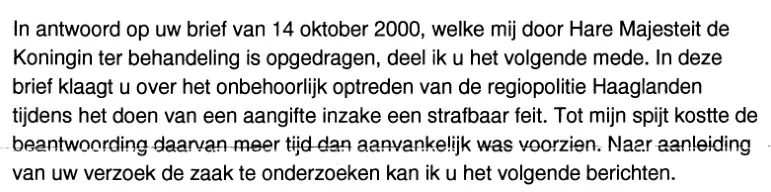

Prueba · Carta
Ministerio del Interior a Giltay, 11 de enero de 2001
El pasaje
«En respuesta a su carta del 14 de octubre de 2000, que me ha sido encomendada para su tramitación por Su Majestad la Reina, le comunico lo siguiente. En dicha carta, usted se queja de la actuación indebida de la policía regional de Haaglanden cuando usted presentó una denuncia relativa a un hecho delictivo». Página 1, las dos primeras oraciones del párrafo inicial de la carta. Traducido del neerlandés; el texto original figura a continuación.
Texto original
“In antwoord op uw brief van 14 oktober 2000, welke mij door Hare Majesteit de Koningin ter behandeling is opgedragen, deel ik u het volgende mede. In deze brief klaagt u over het onbehoorlijk optreden van de regiopolitie Haaglanden tijdens het doen van een aangifte inzake een strafbaar feit.”

Por qué importa este documento
En esta carta del 11 de enero de 2001, el ministro del Interior responde a la carta de Giltay del 14 de octubre de 2000, que le había sido «encomendada para su tramitación por Su Majestad la Reina». El ensayo sostiene que la reina Beatriz intervino a petición de Giltay cuando su denuncia, relacionada en parte con Srebrenica, seguía sin tramitarse. El 14 de diciembre de 2000, el gestor del cuerpo de policía (korpsbeheerder), W.J. Deetman, había declarado fundado en un punto el recurso de Giltay contra la resolución de su queja sobre la actuación policial. La carta también lo recoge: el ministerio observa que Giltay ya ha recibido la respuesta de Deetman y lo remite a ella.
Procedencia
- Documento
- Carta de cierre (afdoeningsbrief)
- Remitente
- Ministerio del Interior y de Relaciones del Reino, Dirección de Policía, firmada en nombre del ministro por la directora de Policía, L.M.C. Ongering
- Destinatario
- E.F. Giltay
- Fecha
- 11 de enero de 2001
- Referencia
- EA2000/95374
- Asunto
- «Uw klacht over politieoptreden» (su queja sobre la actuación policial)
- Referencias
- La carta de Giltay del 14 de octubre de 2000, remitida para su tramitación por Su Majestad la Reina; su queja del 24 de abril de 2000 ante la policía regional de Haaglanden
- Anexo
- 1 (un folleto del Defensor del Pueblo de los Países Bajos)
- Idioma
- Neerlandés
- Páginas
- 1 en este PDF; la hoja misma lleva la numeración 1 de 2
- Véase también
- Gabinete de la Reina a Giltay, 31 de octubre de 2000W.J. Deetman, gestor del cuerpo de policía de Haaglanden, a Giltay, 14 de diciembre de 2000
Citado en: el ensayo «La prohibición cayó, el libro quedó en pie» en el capítulo (3) «Lo que revela el libro: el encubrimiento en torno a Srebrenica» y en la diapositiva «Gabinete de la Reina · 2000» de la presentación «La historia en el mapa».
Ficha de prueba: https://
Documento: https://
Modificado por última vez el 13 de septiembre de 2026, consultado el 26 de noviembre de 2026.

Esta página es una ficha de prueba del libro El general del encubrimiento de Edwin Giltay y del sitio web que lo acompaña.